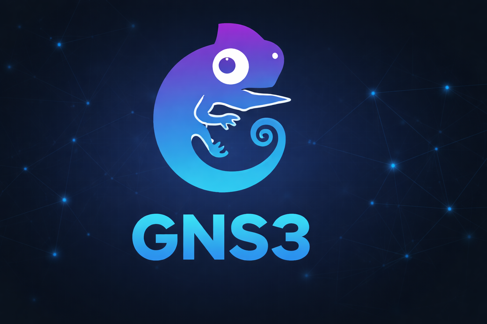
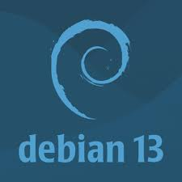
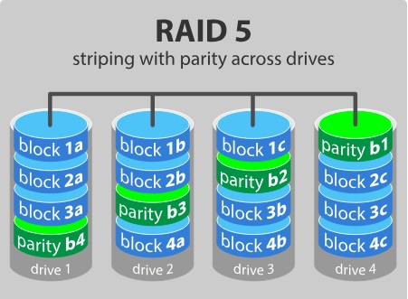
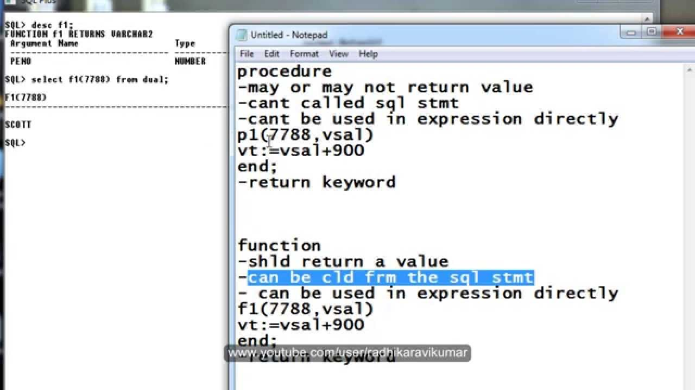
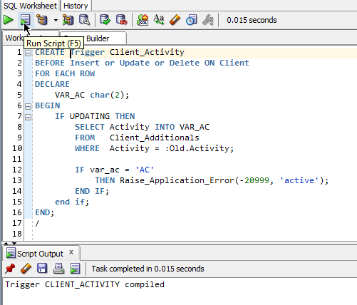
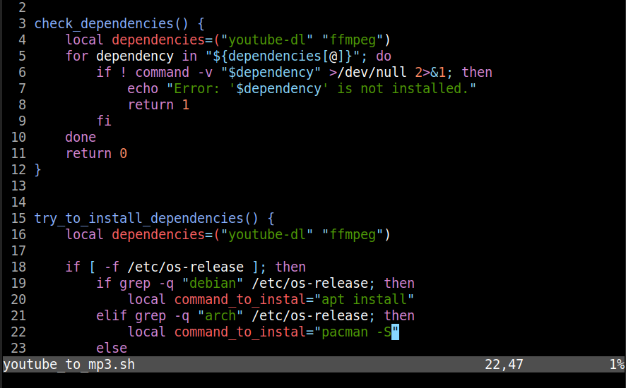

Instalación de GNS3

Instalación y configuración de GNS3 para simular redes complejas. Tanto en Debian 13 como en Windows 11.
Ver documento
Instalación y configuración de GNS3 para simular redes complejas. Tanto en Debian 13 como en Windows 11.
Ver documentoConfiguración de routers Cisco y rutas estáticas para establecer conexiones entre redes. Pruebas de conectividad.
Ver documentoConfiguración de VLANs para segmentar redes, port-bonding para aumentar el ancho de banda y port-mirroring para monitoreo de tráfico.
Ver documento
Separación de la carpeta Home en una partición independiente para mejorar la organización y seguridad de los datos.
Ver documento
COnfiguración de RAID-5 para mejorar la tolerancia a fallos y el rendimiento del almacenamiento.
Ver documentoHabilitación de la suspensión e hibernación en Debian 13 para mejorar la eficiencia energética y la gestión de energía.
Ver documento
Desarrollo de procedimientos y funciones almacenados en PLSQL para gestionar bases de datos Oracle.
Ver documento
Creación de triggers en PLSQL para automatizar tareas y mantener la integridad de los datos.
Ver documento
Desarrollo de scripts en Bash para automatizar tareas administrativas y de mantenimiento en sistemas Linux.
Ver documento